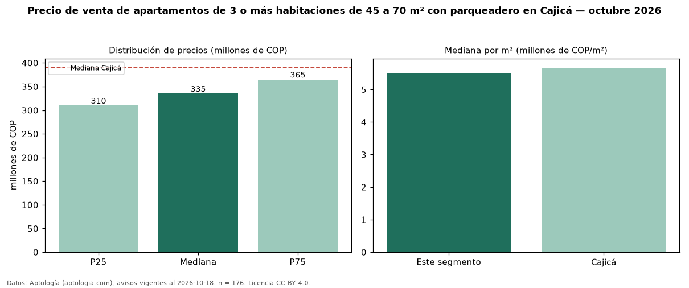

Precio de venta de apartamentos de 3 o más habitaciones de 45 a 70 m² con parqueadero en Cajicá — octubre 2026
En Cajicá, la mediana de precio de venta de apartamentos de 3 o más habitaciones de 45 a 70 m² con parqueadero es COP 335 millones, según 176 avisos vigentes. Frente a la mediana de los apartamentos de 3 o más habitaciones de 45 a 70 m² en venta de Cajicá (COP 320 millones, n = 248), queda 5 % por encima; este segmento reúne el 71 % de esos avisos. Por metro cuadrado, la mediana es COP 5,49 millones/m² (n = 176), 5 % por encima de los apartamentos de 3 o más habitaciones de 45 a 70 m² en venta de Cajicá (COP 5,24 millones/m²). El área mediana anunciada es 62 m². La administración mediana declarada es COP 300.000 al mes (n = 145). El estrato más frecuente es 4 (72 % de los avisos con estrato). La mediana de todos los apartamentos en venta de Cajicá es COP 390 millones (−14 % de diferencia). La mitad central de los avisos va de COP 310 millones a COP 365 millones (razón 1,2), una dispersión baja. Datos: Aptología (aptologia.com), CC BY 4.0 — https://www.aptologia.com/venta/cajica. Archivos: PDF, CSV con las cifras y gráfica PNG.

| Avisos únicos | 176 |
|---|---|
| Percentil 25 | COP 310.000.000 |
| Mediana | COP 335.000.000 |
| Percentil 75 | COP 365.000.000 |
| Mediana por m² | COP 5.486.296 |
Fuente: avisos vigentes de portales inmobiliarios recopilados por Aptología, deduplicados (mínimo 30 avisos únicos por celda). Precios pedidos, no cerrados. Fecha: 2026-10-18.